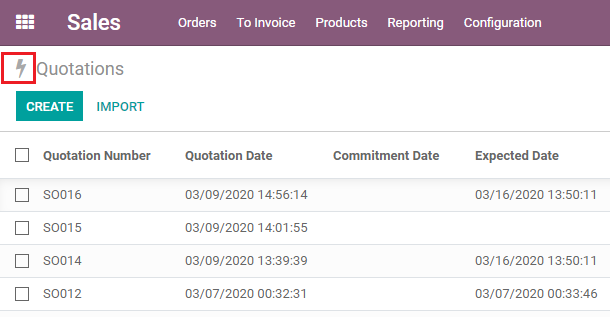
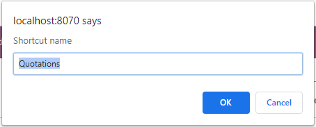
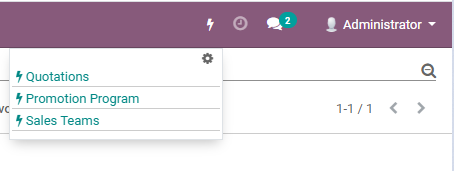
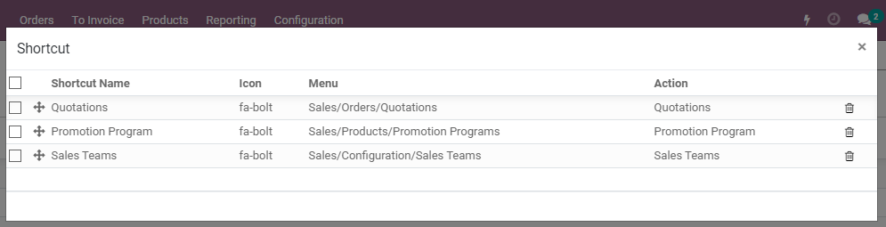

Contributors
- CuuNV < nguyenvancuu.vp@gmail.com>
Maintainer
This module is maintained by myself, if you are interested to contribute please let me know

Thank you
 Quick add/remove shortcut button
 Set shortcut's name as individual prefer
 Toggle show shortcuts
 Advance settings
This module brings some features:
This module is maintained by myself, if you are interested to contribute please let me know
Thank you